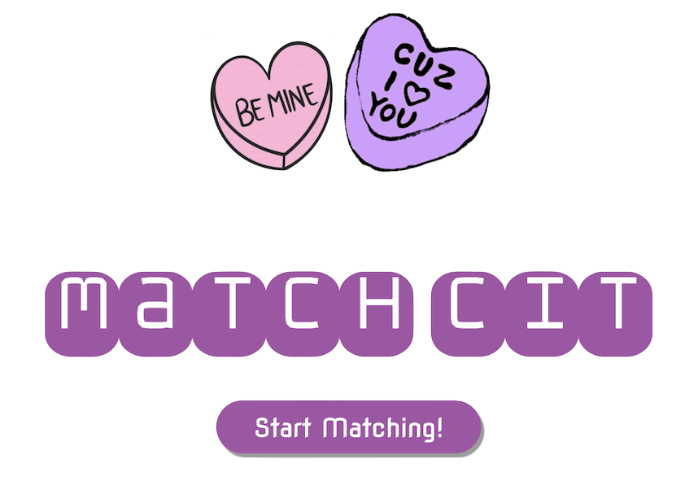

<!DOCTYPE html>
<html>
    <head>
        <meta charset="utf-8">
        <meta name="viewport" content="width=device-width, initial-scale=1">
        <link href="https://cdn.jsdelivr.net/npm/bootstrap@5.3.0-alpha1/dist/css/bootstrap.min.css" rel="stylesheet" integrity="sha384-GLhlTQ8iRABdZLl6O3oVMWSktQOp6b7In1Zl3/Jr59b6EGGoI1aFkw7cmDA6j6gD" crossorigin="anonymous">
        <link rel="stylesheet" href="styles.css">
        <link rel="preconnect" href="https://fonts.googleapis.com">
        <link rel="preconnect" href="https://fonts.gstatic.com" crossorigin>
        <link href="https://fonts.googleapis.com/css2?family=Kanit&family=Secular+One&family=Unbounded&display=swap" rel="stylesheet">


        <title>
            Antina Yeh | Full Stack Developer 
        </title>
        <script src="https://cdn.jsdelivr.net/npm/bootstrap@5.3.0-alpha1/dist/js/bootstrap.bundle.min.js" integrity="sha384-w76AqPfDkMBDXo30jS1Sgez6pr3x5MlQ1ZAGC+nuZB+EYdgRZgiwxhTBTkF7CXvN" crossorigin="anonymous"></script>
    </head>
</html>
<body>
    <div class="nav-bar">
        <p class="name-text">@antinayeh</p>
        <a href="https://drive.google.com/file/d/1MNavJcMB5uiUzFIo8R1xwi6nIftfXz9s/view?usp=sharing" class="nav-text" target="_blank"> Resume</a>
        <a href="https://github.com/antinayeh" class="nav-text" target="_blank"> Github</a>
        <a href="https://www.linkedin.com/in/antina-yeh/" class="nav-text" target="_blank"> Linkedin</a>
        <a href="index.html" class="nav-text"> Home</a>
    </div>

    <div class="header" style="padding-bottom: 0px";>
        <div class="title-text-div">
            <p class="title-text"> 
                MatchCIT 
                <a href="https://github.com/antinayeh/MatchCIT" class="github-text" target="_blank"> Project Github</a>
                <a href="https://www.youtube.com/watch?v=RrXoyc01ezg" class="github-text" target="_blank"> Demo Video</a>
            </p>
            <p class = "intro-text" >
                MatchCIT is a web app that helps MCIT students at Penn find love. <br> 
                Won 2nd place out of 13 teams in the 2023 MCIT Hackathon hosted by UPenn. <br>
            </p>
        </div>
        <div class="logo-div">
            
        </div>
    </div>
    <div class="main">
        <div class="match-cit">
            <div class= "project-heading-div">
                <p class="project-heading-text">Description: </p>
            </div>
                <div class="project-descrip-text">
                    Finding love can be hard for anyone, but it is especially hard when you are a graduate student studying Computer Science 
                    who is too busy to go on 10 failed dates before finding your true love. That is why we created Match CIT: 
                    a dating web app for the MCIT community at the University of Pennsylvania.
                    Through Match CIT, students can fill out a curated survey asking them about their personality, interests, values and much more. 
                    This data will then be sent to our database, where our own matching algorithm will run on the data and generate a list of top 3 
                    most compatible matches out of all the Match CIT users for each student. Students will then recieve an email showing their top matches, 
                    including a compatability score for each match. Our algorithm uses machine learning algorithms such as k means clustering to help 
                    generate the results. Now when students go on dates with their matches, 
                    they can be sure that they are at least MatchCIT-verified compatible, increasing their chance of finding true love by just a bit more!
                </div>
    
            <div class= "project-heading-div">
                <p class="project-heading-text">Tech Stack: </p>
            </div>
            <div class="project-descrip-text">
                Frontend: HTML, CSS, Javascript <br>
                Backend: Python, Flask, Postman API <br>
                Database: SQLite <br>
            </div>
    
            <div class= "project-heading-div">
                <p class="project-heading-text">Design Flow: </p>
            </div>
            <div class="project-descrip-text">
                1. User fills out the survey <br>
                2. Frontend sends survey responses in HTML Form data by HTTP POST request to backend api /api/signup <br>
                3. Backend receives the data and stores in user table of a local SQLite database instance <br>
                4. Admin triggers matching process by sending GET request to backend api /api/match <br>
                5. Backend loads survey data from database, generates matches and stores the match results in a csv file <br>
                6. Admin triggers notification process by sending GET request to backend api /api/notify <br>
                7. Backend loads match results from the csv file and sends out emails 
            </div>
    
            <div class= "project-heading-div">
                <p class="project-heading-text">Algorithm: </p>
            </div>
            <div class="project-descrip-text">
                There are plenty of algorithms being used in the current dating market. 
                For example, Tinder uses an Elo system (similar to the chess system) where the more people swipe right on your profile, 
                the more Elo you have. People with similar Elo will see each other more on their app, which makes the app kind of a popularity contest.
                On the other side of the spectrum, Hinge uses the Gale Shapley Algorithm which is a stable marriage problem that tries to match everyone 
                so everyone reaches a happy medium. We wanted to do something innovative from all the dating apps on the market while still preserving two 
                core values we think dating should be based on: <br>
                <br>
                1. People should have an opportunity to reach out to the people we think they are the MOST compatible with. <br>
                2. People should be matched on both their similarities AND their differences. <br>
            </div>
    
            <div class= "project-heading-div">
                <p class="project-heading-text">Similarity Matching: </p>
            </div>
            <div class="project-descrip-text">
                TWe similarly paired people on their hobbies and their values. 
                Values included their religion and their love languages while hobbies include sports, indoor activities, and social events. 
                We pair people using an unsupervised machine learning algorithm of k-means clustering. 
                K-means clustering groups data points based on certain similarities. 
                Most of the time, the grouping is done based on a distance equation and the number of clusters is done based on an optimal 
                k number search algorithm called the elbow method which graphs the number of k(clusters) with the sum of squared error within clusters. <br>
                <br>
                Before all of the algorithms, we must make sure the data can be run through k means. 
                This means running One Hot Encoding algorithms for the data fields that return some strings. 
                For example both religion and the aesthetics data fields needed to be one hot encoded. 
                After all that, we need to standard scale all the data so they all weighed the same when using k-means. 
                This ensures the same weights are applied evenly to all fields.
            </div>
    
            <div class= "project-heading-div">
                <p class="project-heading-text">Difference Matching: </p>
            </div>
            <div class="project-descrip-text">
                We differently paired people based on their physical appearance and personality. 
                For data fields like height, weight, and age, we believe people can have preferences that are not similar to their own physical traits. 
                This means we needed to create a compatibility score to enumerate the compatibility between two people based on their own physical traits
                 and their preferred traits. We do this by first finding the difference between people’s preferred trait and other people’s original trait. 
                 The smaller the number, the closer they are compatible to each other. 
                 Since we wanted the larger number to be more compatible, we inverted the number and unit scaled it to be between 0 and 1. 
                 Then, finding the compatibility score for each of the physical traits(age, height, race) and personality, 
                 we plug it into our final equation giving each of the traits a specific weight based on research and experience. 
                 Then we chose the top three compatible person for each person and send the emails! 
            </div>
    
            <div class= "project-heading-div">
                <p class="project-heading-text">Future Directions: </p>
            </div>
            <div class="project-descrip-text">
                For the purposes of MCIT dating, our program is sufficient enough to meet the needs of the students in the program. 
                However, as we think about scaling we have three ideas that would help in making the whole idea more robust: <br>
                <br>
                1. Making accounts for the users to put in their information so the results can be sent to their accounts instead of emails. 
                Their accounts can now contain more information about the user, 
                not just what is in the survey and people can browse each other accounts and add more links or pictures to their own accounts 
                to personalize their accounts even more <br>
                <br>
                2. Making the whole system more dynamic. Instead of running the algorithm once, we can make it so everytime a new user is added to the database,
                we can run the program again so people can always get new matches on their accounts. <br>
                <br>
                3. We can try to find datasets online that have people who kept dating after 3 months of matching. 
                With these datasets, we can run their features in a forward feeding neural network to find the model to 
                predict matches for people that would last at least 3 months.
            </div>
        </div>

    </div>
    <div class ="ending-border">
        <p class="ending-text" style="font-size: 40px;">
            Let's grab coffee! <br>
        </p>
        <a href = "mailto: antina@seas.upenn.edu" class="ending-text">antina@seas.upenn.edu</a>
    </div>
    <p class="copyright-text">
        Designed by Antina Yeh
    </p>
</body>


